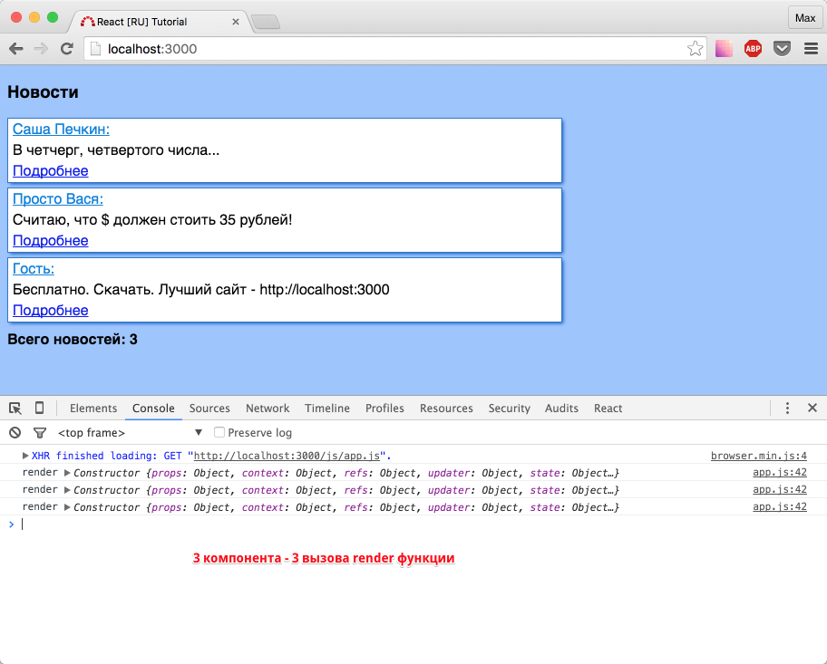
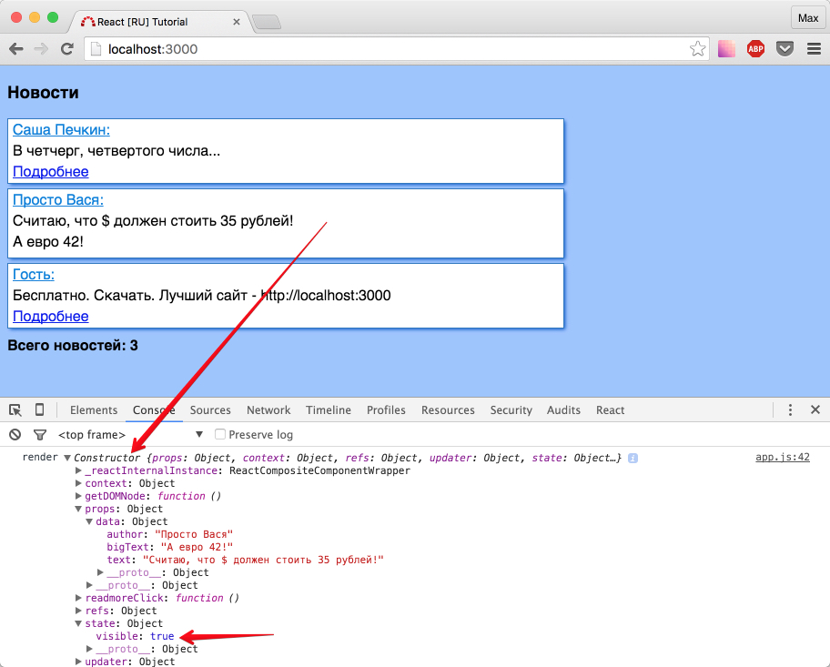
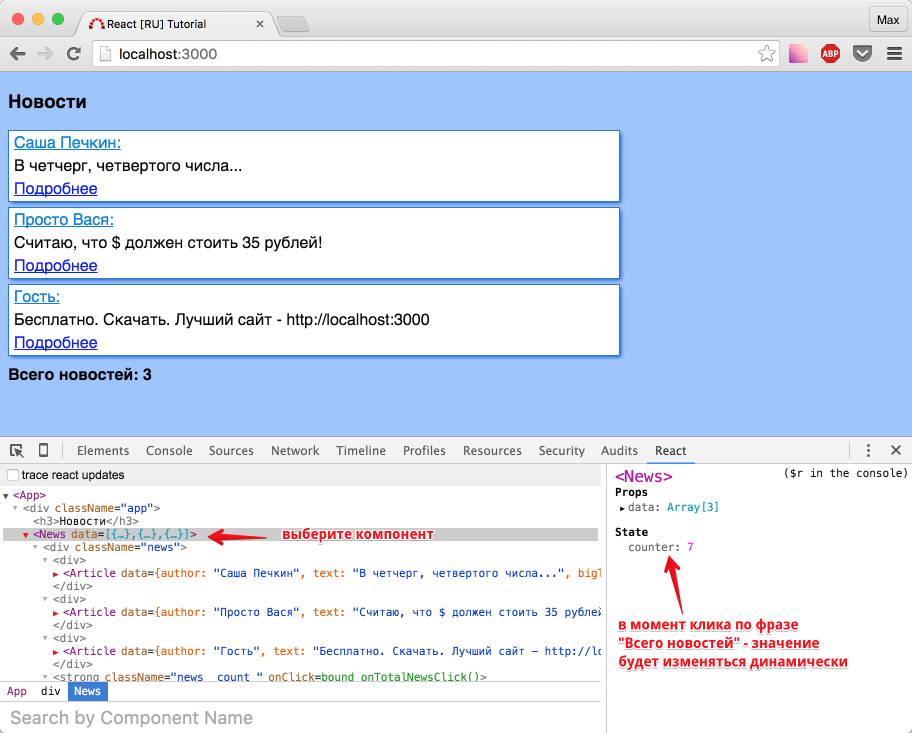

Продвинутое использование state
В этом разделе мы посмотрим как изменение state влияет на компонент и немного "зацепим" stateless архитектуру.
Изменение state вызывает render компонента
Все указано в подзаголовке, предлагаю нам в этом убедиться:
фрагмент компонента <Article />:
...
render: function()
{
var author = this.props.data.author,
text = this.props.data.text,
bigText = this.props.data.bigText,
visible = this.state.visible;
//добавили console.log
console.log('render',this);
return (
<div className='article'>
<p className='news__author'>{author}:</p>
<p className='news__text'>{text}</p>
<a href="#" onClick={this.readmoreClick} className={'news__readmore ' + (visible ? 'none': '')}>Подробнее</a>
<p className={'news__big-text ' + (visible ? '': 'none')}>{bigText}</p>
</div>
)
}
...

Очистите консоль, и нажмите подробнее на любой из новостей:
Убедились?
Запомните первое правило: нельзя вызывать setState в render: реакт видит изменилось состояние - начинает перерисовывать компонент - видит что изменилось состояние - начинает перерисовывать компонент...
Второе правило: render - дорогостоящая операция, поэтому внимательно относитесь к тому, где вы вызываете setState, и что это за собой влечет.
Банальные console.log'и могут вам в этом помочь.
Очевидно, что если перерисовывается родительский компонент, то будут перерисованы и все дочерние компоненты.
Дальше мы с вами пройдем разные "стадии жизни" компонента, и убедимся, что во время его "перерисовки" могут выполняться разные дорогостоящие операции и даже ajax-запросы.
Пока что, просто убедимся, что вызов setState родителя - перерисует дочерние компоненты.
Для этого предлагаю создать обработчик onClick на фразе "Всего новостей".
Попробуйте сами.
Задача: Необходимо добавить компоненту <News /> свойство состояния - counter, в котором хранится количество кликов по фразе.
То есть обычный автоинкремент.
В решении важно использовать this.setState({counter: ++this.state.counter}), об этом мы подробно поговорим после решения, которое представлено ниже как обычно в виде подсказок и полностью.
Подсказка #1: добавьте метод getInitialState в компонент <News /> для создания начального состояния.
...
getInitialState: function()
{
return
{
counter: 0
}
}
...
Подсказка #2: добавьте обработчик onClick с функцией, которая будет увеличивать cчетчик (следовательно изменять state, следовательно вызывать this.setState... ).
Решение: Полный код компонента <News />
var News = React.createClass(
{
propTypes:
{
data: React.PropTypes.array.isRequired
},
getInitialState: function()
{
return
{
counter: 0
}
},
onTotalNewsClick: function()
{
this.setState({counter: ++this.state.counter });
},
render: function()
{
var data = this.props.data;
var newsTemplate;
if (data.length > 0)
{
newsTemplate = data.map(function(item, index)
{
return (
<div key={index}>
<Article data={item} />
</div>
)
})
}
else
{
newsTemplate = <p>К сожалению новостей нет</p>
}
return (
<div className='news'>
{newsTemplate}
<strong className={'news__count ' + (data.length > 0 ? '':'none') } onClick={this.onTotalNewsClick}>Всего новостей: {data.length}</strong>
</div>
);
}
});
Проверьте в браузере.
Если вы не удаляли console.log из компонента <Article /> - на каждый клик по фразе "Всего новостей", в консоли будет появляться по 3 "перерисовки".
Поговорим о:
this.setState({counter: ++this.state.counter })
Почему же, было важно использовать именно префиксную запись ++, а не постфиксную?
Сначала вспомним теорию:
++ перед переменной (префикс) - сначала увеличивает ее на 1, а потом возвращает значение;
++ после переменной (постфикс) - сначала вернет значение, а потом увеличит значение переменной;
В таком случае, мы должны были бы потерять всего 1 клик, не так ли?
Проверьте в консоли следующим образом: откройте вкладку React в консоли, выберите компонент <News />, начните кликать на фразу "Всего новостей"
Изменяется ли значение counter, если используется префиксная запись?
Да, изменяется:
Изменяется ли значение counter, если используется постфиксная запись?
Нет, не изменяется вообще. (убедитесь сами)
Ответ кроется в официальной документации:
setState() - не изменяет this.state немедленно, а создает очередь изменений состояния.
Доступ к this.state после вызова метода, потенциально может вернуть имеющееся (что равносильно - бывшее) значение.
Самое время крикнуть - верните мои деньги назад, и уйти...
Но, не все так плачевно.
Теперь вы знаете об этой особенности, и будете если что вооружены.
Зачем так сделано?
Вероятно, для оптимизации работы библиотеки в целом.
Вообще state у компонентов используется не часто.
С появлянием flux - подхода, коммьюнити стало перемещаться на сторону stateless подхода, когда state не используется вообще (за исключением редких моментов).
Мой любимый игрок данного лагеря - Redux, о котором я тоже написал подробное руководство на русском.
Почему сейчас мы не изучаем Redux, стоит ли бросить все и прочитать другой туториал?
Определенно - нет.
Продолжайте изучение данного курса.